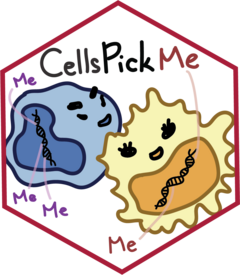

Extract the correct reference data set
getRef.RdExtract the correct reference data set
Value
A list of the requested reference data set (RGchannelSet Object) and the cell types of the sample (vector of character)
Examples
# Request the IDOL reference (2016) without normalization
getRef(ref = "IDOL", normType = "None")
#> see ?FlowSorted.Blood.EPIC and browseVignettes('FlowSorted.Blood.EPIC') for documentation
#> loading from cache
#> $reference
#> class: RGChannelSet
#> dim: 1051815 49
#> metadata(0):
#> assays(2): Green Red
#> rownames(1051815): 1600101 1600111 ... 99810990 99810992
#> rowData names(0):
#> colnames(49): 201868500150_R01C01 201868500150_R03C01 ...
#> 201870610111_R06C01 201870610111_R07C01
#> colData names(32): Sample_Plate Sample_Well ... filenames normalmix
#> Annotation
#> array: IlluminaHumanMethylationEPIC
#> annotation: ilm10b4.hg19
#>
#> $cellTypes
#> [1] "CD8T" "CD4T" "NK" "Bcell" "Mono" "Gran"
#>